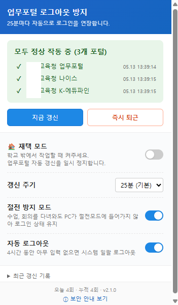
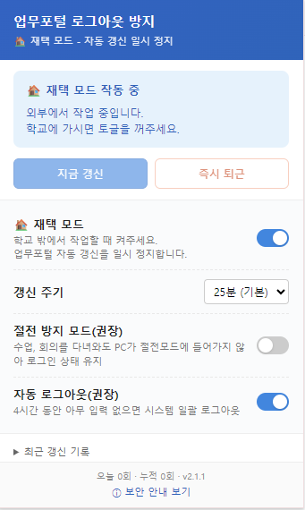
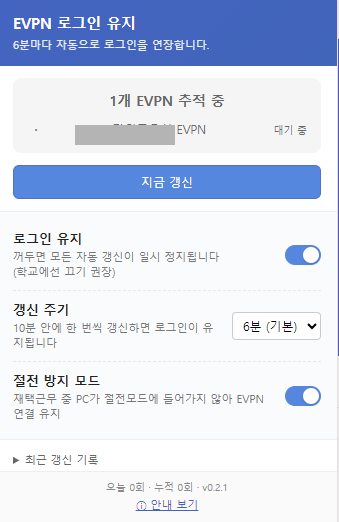

업무포털·나이스·K-에듀파인. 1시간만 자리를 비우면 강제 로그아웃되는, 그 인증서 재입력의 번거로움.
"이거 한 번에 해결할 수 있을까?" 싶어서 만지작거리기 시작했습니다.
처음엔 Tampermonkey 사용자 스크립트로 짜봤어요. 25분마다 사이트에 GET 요청을 보내는 단순한 방식.
그런데 보급이 막막했습니다. Tampermonkey 자체를 설치하라고 안내하는 일이 또 다른 허들이었으니까요.
다음엔 Python으로 .exe를 만들었습니다. 더블 클릭하면 바로 돌아가는 형태로.
하지만 자동 업데이트도 안 되고, 보안 경고도 뜨고, 동료에게 보내드리기 부끄러웠어요.
결국 Chrome 확장 프로그램으로 정착했습니다.
Manifest V3로 짜니 Chrome과 Edge 양쪽에 같은 코드로 올릴 수 있더라고요. 한 번 짜면 두 곳에 닿는다는 게 좋았어요.
그렇게 두 달 가까이 다듬어 v2.1.0까지 왔습니다.
17개 시도교육청 자동 인식, 3개 시스템 동시 추적, 갱신 주기 설정, 절전 방지 모드, 4시간 유휴 시 자동 로그아웃, 즉시 퇴근 버튼.
인증서 비밀번호는 저장하지 않고, 외부 서버로도 아무것도 보내지 않습니다.
'절전 방지 모드'는 권장 설정이라, 다음 버전(v2.2.0)에서는 설치 직후부터 기본으로 켜지도록 다듬었어요. 지금 검수 대기 중입니다.
거의 다 됐다 싶을 때쯤, Chrome 웹 스토어에 이미 비슷한 도구가 있다는 걸 알게 됐어요.
다른 분이 먼저 올려주신 "교육청 세션 자동 연장", "교육청 껌딱지".
별점 5.0점… 이미 많은 분들이 잘 쓰고 계셨더라고요.
솔직히 좀 아쉬웠습니다.
"한 발 늦었구나."
며칠 마음이 가라앉은 채로 두었다가, 다시 들여다보았어요.
Edge에는 아직 비슷한 도구가 없더라고요. 절전 방지 모드, 즉시 퇴근 버튼, 4시간 유휴 자동 로그아웃 같은 기능도 조금씩 결이 달랐고요.
같은 길을 걷는 사람이 있다는 건,
그 길이 누군가에게 필요했다는 뜻이기도 하니까.
한참을 망설이긴 했어요.
"이미 잘 굴러가는 도구가 있는데, 굳이 나까지 올려야 하나?" 싶기도 했고요.
그래도 — Chrome 웹 스토어에 확장 프로그램을 올려본 첫 경험, 그 한 줄에 작은 의미를 두기로 했습니다.
완전히 똑같은 도구는 아니니까. 비슷하더라도 결이 조금 다르니까.
"괜찮지 않을까." 하고요.
그래서 Chrome 시장에선 보조 도구로, Edge 시장에선 조용히 자리를 잡는 도구로 — 그렇게 마음을 다듬었습니다.
그리고 알아본 김에 — EVPN(교육기관 원격업무지원 시스템) 쪽엔 아직 비슷한 도구가 없더라고요.
같은 로그아웃 문제를 겪는 시스템인데도요.
그래서 그쪽도 조용히 하나 더 만들어 두었습니다.
두 상황의 기본 세팅
두 프로그램을 모두 설치해 두고, 어디서 일하느냐에 따라 토글만 살짝 바꿔주면 됩니다.
학교 PC에선 OFF, 노트북에선 ON으로 한 번씩 잡아두시면, 그다음부턴 PC를 옮길 때마다 만지실 필요가 없어요.


업무포털 로그아웃 방지: 재택 모드 OFF
EVPN 로그인 유지: 로그인 유지 OFF


업무포털 로그아웃 방지: 재택 모드 ON
EVPN 로그인 유지: 로그인 유지 ON
오늘부터 작업실에 두 도구를 함께 올려둡니다.
Chrome·Edge 양쪽 스토어 모두에서 받으실 수 있어요.
자세한 사용법은 이렇게 쓰시면 됩니다에 따로 정리해 두었어요.
혹시 필요한 선생님이 계시다면, 가볍게 한 번 써보시고 의견 주시면 좋겠습니다.
— 작업실 한 귀퉁이에서